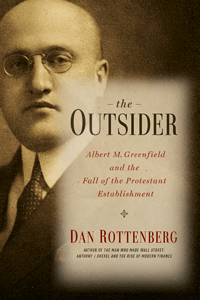

<body bgcolor="#FFFFFF" text="#000000" link="#0000FF" vlink="#CC0000" alink="#CC0000"><center><hr width="350" size="1" align="center" noshade>The remarkable life of Albert M. Greenfield, a Jewish immigrant whose business empire helped shape Philadelphia and the United States in the twentieth century<hr width="350" size="1" align="center" noshade><p><a href="https://cdcshoppingcart.uchicago.edu/Cart/ChicagoBook.aspx?ISBN=9781439908419&&PRESS=temple" target="_top">Buy this book!</a> | <a href="https://cdcshoppingcart.uchicago.edu/Cart/Cart.aspx?PRESS=temple" target="_top">View Cart</a> | <a href="https://cdcshoppingcart.uchicago.edu/Cart/Cart.aspx?PRESS=temple" target="_top">Check Out</a></p><p></p></center><!--none//--><h1>The Outsider</h1>
<H2>Albert M. Greenfield and the Fall of the Protestant Establishment</H2>
<h3>Dan Rottenberg</h3>
<P>cloth 1-4399-0841-9 $35.00, Aug 14, <FONT COLOR=#990033>Available</FONT>
<br>Electronic Book 1-4399-0843-5 $35.00 <FONT COLOR=#990033>Available</FONT>
<BR> 384 pp
6x9
11&nbsp;halftones
</P><BLOCKQUOTE><P><I>"The curse of history is that it inevitably becomes hazy. The beauty of history is its come-alive revival in Dan Rottenberg�s eloquent and meticulously researched </I>The Outsider<I>. As Rottenberg so marvelously shows, Albert M. Greenfield wore a multitude of top hats: real estate, hotels, retail, newspapers, even candy. He was also a marvelous contradiction: a street hustler but of impeccable manner, ruthless in the art of the deal but dedicated to civil rights, the object of despicable anti-Semitism but never of any grudge. What emerges is not simply an indelible portrayal of a great Philadelphian but a great and timeless American."</i> <br>&#151<b>Buzz Bissinger</b>, author of <i>A Prayer for the City</i> and <i>Friday Night Lights</i></I></P></BLOCKQUOTE>
<P><P>Albert M. Greenfield (1887�1967), a Russian immigrant outsider, was courted for his business acumen by mayors, senators, governors, and presidents, including Franklin Roosevelt and Harry Truman. He built a business empire that encompassed real estate, department and specialty stores (Bonwit Teller and Tiffany & Co.), hotels (the Ben Franklin and the Bellevue-Stratford), banks, newspapers, transportation companies, and the Loft Candy Corporation. Greenfield challenged Philadelphia�s entrenched business elite by forming alliances among Jews, Catholics, and African Americans. He was also instrumental in bringing both major political conventions to Philadelphia in 1948.
<P>In <i>The Outsider</I>, veteran journalist and best-selling author Dan Rottenberg deftly chronicles the astonishing rises, falls, and countless reinventions of this combative businessman. Greenfield's power enabled him to cross social, religious, and ethnic boundaries with impunity. He alarmed Philadelphia's conservative business and social leaders�Christians and Jews alike�some of whom plotted his downfall.
<P>In this engaging account of Greenfield's fascinating life, Rottenberg demonstrates the extent to which one uniquely brilliant and energetic man pushed the boundaries of society's limitations on individual potential. <I>The Outsider</I> provides a microcosmic look at three twentieth-century upheavals: the rise of Jews as a crucial American business force, the decline of America's Protestant Establishment, and the transformation of American cities.</p>
<BR>&nbsp;<h2>Excerpt</h2><P>Excerpt available at <a href="http://www.temple.edu/tempress">www.temple.edu/tempress</a></p>
<BR>&nbsp;<h2>Reviews</h2>
<p><i>"Dan Rottenberg has written an insightful, fascinating book about Albert M. Greenfield�a man who had as much to do with the mid-twentieth-century renaissance of Philadelphia as the dynamic team of Joe Clark and Richard Dilworth. They brought Philadelphia back to life. Greenfield�s business acumen and inexhaustible energy changed the nature of Philadelphia�s business establishment forever. An amazing book about an amazing man!"</i><br>&#151<b>Edward G. Rendell</b>, former Governor of Pennsylvania
<p><I>"In this mainly laudatory biography, Rottenberg traces Greenfield�s unlikely story, beginning as a Russian Jewish son of a textile worker through his rapid rise to fortune as a real estate broker, developer, and banker. Though the book deals primarily with Greenfield�s business activities, Rottenberg pays close attention to his subject�s struggles as a Jew in a world dominated by the entrenched Protestant establishment..... Readers interested in the history of Philadelphia will enjoy the detailed accounts of Greenfield�s role in the development of some of the city�s most prominent buildings and businesses, and his relationships with generations of business, religious, and civic leaders."</I><br>&#151<b><i>Library Journal</b></i>
<p><i>"Written with sympathy for the frailties of the human ego, </i>The Outsider<i> explores how individuals reinvent themselves. Rottenberg offers a micro-history of the way that Jews like Albert Greenfield built American cities by participating in the transactional economy of real estate destruction and creation. Greenfield�s story, as expertly rendered by Rottenberg, helps explain the development of Philadelphia, the evolution of Jewish real estate development in American urban centers, and the ways in which Jews accessed new forms of power in the United States."</i><br>&#151<b>Lila Corwin Berman</b>, Associate Professor and Murray Friedman Chair of American Jewish History and Director of the Feinstein Center for American Jewish History at Temple University
<p><i>"With </i>The Outsider<i>, Rottenberg [shows how] Greenfield carefully managed his public image, from the time of his emergence as a real estate trader pledged to the corrupt Vare Republican political gang of the 1910s and '20s, through his emergence as a banking and retail baron and patron of FDR's New Deal, to his post-World War II national prominence."</i><br>&#151<b><i>Philadelphia Inquirer</i></b>
<p><i>"History buffs will enjoy a fascinating biography of Albert M. Greenfield, a real estate tycoon whose long career helped shaped Philadelphia in the 20th Century.... In this engaging and thoroughly researched book, Rottenberg brings to life a man who befriended presidents Hoover, Roosevelt, Truman and Johnson, as well as Pennsylvania politicians of his day. He also forged coalitions between Jews, Catholics and blacks during his long career."</i><br>&#151<b><i>Main Lines Times</i></b>
<p><i>"Rottenberg has written with verve about the well known yet still somewhat enigmatic Philadelphia real estate and retail mogul Albert Greenfield (1887�1967). His biography is the story of a young Jewish immigrant who successfully ignored�when he could�barriers to eventually become a man with enough financial power to telephone several presidents. Over the course of a lifetime punctuated by spectacular failures and successes, Greenfield owned some of the most notable Philadelphia institutions, played an active role in the revitalization of Society Hill, and was an influential voice in national and even, on occasion, international affairs. Rottenberg based his research on archival collections, newspapers, oral interviews, and an unpublished Temple Univ. dissertation on Greenfield, and the resulting account is mainly laudatory.... Perhaps the most interesting aspect of Rottenberg's biography may be found in the intersection of Greenfield�s activities with the changing times in which he lived and acted. Summing Up: Recommended."</i><br>&#151<b><i>Choice</i></b>
<p><i>"Rottenberg�s well-researched narrative gracefully traces [Albert M.] Greenfield�s story through the theme of his 'outsider' status. The author appreciates the subtleties of what this would have meant to his subject, who seems to have aspired to 'mainline' acceptance but without sacrificing his Jewish heritage wholesale, all while vehemently rejecting the 'rags-to-riches' label.... Rottenberg�s work, with its thoughtful, nuanced analysis and readable, lively prose, should command a broader audience still, and could be a useful monograph for collegiate courses on ethnic relations, urban politics, or the intersection of class, culture, and business.� </i><br>&#151<b><i>Pennsylvania Magazine of History and Biography</i></b>
<BR>&nbsp;<h2>Contents</h2><P>
<p>Preface: The Jews, the Wasps, and the New American Dream
<br>Author�s Disclosure
<p>Prologue: Merion Station, December 1930
<p><b>PART I: Beginnings</b>
<br>1. The Wealth in Your Head
<br>2. The New World
<p><b>PART II: Power</b>
<br>3. Broker
<br>4. Developer
<br>5. Banker
<p><b>PART III: Downfall</b>
<br>6. The Great Crash
<br>7. The Protestant Establishment
<br>8. The Reckoning
<p><b>PART IV: Comeback</b>
<br>9. Merchant Prince
<br>10. New Deal Democrat
<br>11. Reluctant Zionist
<br>12. Godfather
<p><b>PART V: Legacy</b>
<br>13. Civic Savior
<br>14. Lion in Winter
<br>15. House of Cards
<p>Epilogue: Merion Station, December 1930
<p>Acknowledgments
<br>Principal Characters
<br>Notes
<br>Bibliography
<br>Index
</P><BR>&nbsp;<H2>About the Author(s)</H2>
<P><b>Dan Rottenberg</b> is the author of eleven books, including <i>The Man Who Made Wall Street: Anthony J. Drexel and the Rise of Modern Finance</i>, and the founding editor of the <i>Broad Street Review</i>, an arts and culture website.</P>
<BR><H2>Subject Categories</H2>
<p><A HREF="/tempress/biography.html" TARGET="_top">Biography/Memoir/Autobiography</a>
<BR><A HREF="/tempress/philly.html" TARGET="_top">Philadelphia Region</a>
<BR><A HREF="/tempress/history.html" TARGET="_top">History</a>
</p>
<p align="center"><a href="https://cdcshoppingcart.uchicago.edu/Cart/ChicagoBook.aspx?ISBN=9781439908419&&PRESS=temple" target="_top">Buy this book!</a> | <a href="https://cdcshoppingcart.uchicago.edu/Cart/Cart.aspx?PRESS=temple" target="_top">View Cart</a> | <a href="https://cdcshoppingcart.uchicago.edu/Cart/Cart.aspx?PRESS=temple" target="_top">Check Out</a></p><p><font face="Arial" size="1"><a href="copyright.html" onMouseOver="window.status='Web Copyright Policy';return true;" onMouseOut="window.status=''" title="Web Copyright Policy">&copy;</a> 2017 <a href="http://www.temple.edu" target="new" onMouseOver="window.status='Link to Temple University home page';return true;" onMouseOut="window.status=''" title="Link to Temple University home page">Temple University</a>. All Rights Reserved. http://www.temple.edu/tempress/titles/2197_reg.html</font></p>